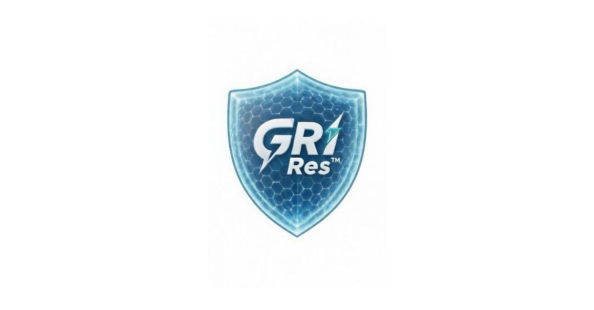

GRIM 3.0.0
The first open-source release of GRIM (February 23, 2026). It puts a complete restoration planning tool in the hands of every operator, planner and student.

Milestone-based restoration planning with greedy and backtracking solvers, and a full AC optimal power flow at every restoration step. Free and open source under GPL-3.0.